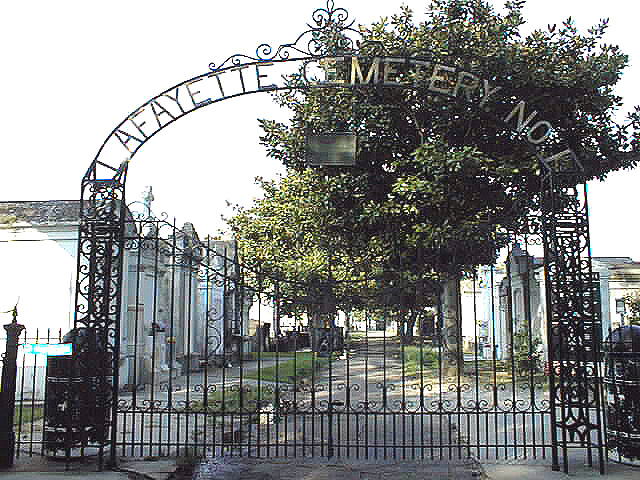

Fred and Heath Hatfield's Inventory and Cross-Index to Plaques and Tombs
Historic New Orleans Cemetery
Lafayette #1

To access the cemetery index, click here.
All photos and data
Copyright 2008 by Fred Hatfield
P.O. Box 52466
New Orleans, LA 70152
hatfield@bellsouth.net
(504) 739-1311